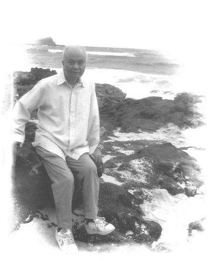
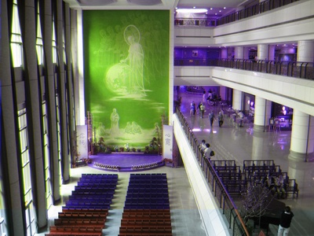
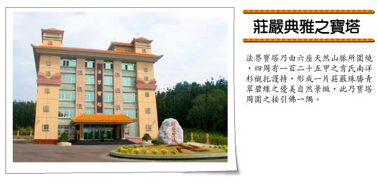
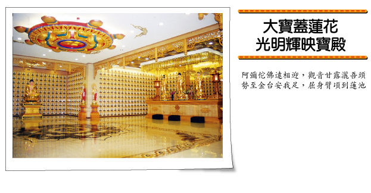

最后旅程
2007年4月18日晚上7点09分，心电图上呈现完全直线．．．．
──陈锦桐
冯先生在观世音菩萨圣号中神色安详往生！ 在冯先生病床前的，就是冯先生口中的第二个干女儿（陈锦桐内人）、我、看护曾小姐以及护士小姐4个人！
关于冯冯居士往生前的情形，末学从陈师兄哪里得知，在这里转述给大家听。陈师兄在4月18日下午3点左右去居士病房，并持咒。居士一切正常，血液含氧量到90多(具体数值不知如何表述，陈师兄说比他的高呢)，呼吸正常，安然入睡中。此时以及陈师兄来之前，有慈济赖小姐姐妹一直陪伴在居士身边外加看护小姐。5点多陪伴居士一天的赖小姐她们离开，因为她们觉得居士一切正常，应该几天内都没有事情。
陈师兄打电话让陈师嫂来病房。因为事前有准备，陈师嫂就带着西方三圣像以及观世音菩萨圣号音带 来到病房。师嫂将西方三圣像挂在居士床头，师嫂也和居士讲话，让 居士安心回到观世音菩萨身边，并播放观世音菩萨圣号。 大约在6点45分左右，居士开始呼吸异常，几分钟内就停止了呼吸。神通安详愉快的样子。7点09分心电图呈现直线。之后陈师兄、师嫂、看护曾小姐和护士一起称念观世音菩萨圣号2小时为居士祝福。再后来慈济人将居士遗体移至助念室为居士助福两小时。慈济人称助念是祝福。再后来就将居士遗体安置在台北的辛亥殡仪馆。
居士一生为神通所累。他本来是希望用神通治病帮助慈济捐款的，也希望能用神通接引人进入佛门，也希望用神通将佛法和科学联系起来，解释佛法的。但是没有想到为 神通所累。其实他一直是希望人们正信、不崇尚神通的。他后来回归为平常人。他对末学讲他没有修行，是一个平常人。所以，末学想他会用平常人的方式离开这个 世界吧。
陈师兄、陈师嫂在电话中告诉末学 ，说干爹他去了极乐世界。要我放心。后来，赖小姐的丈夫从德国打电话到台湾，并且大哭说他梦见了居士骑着白色的马在天空中飞行。在帮助地上很多受苦的人。居士还示现他的面孔给赖小姐的丈夫看， 居士的面孔白皙优美而带愉快表情。穿什么样子的衣服和裤子等等，并且告诉赖小姐的丈夫说：您们不要悲伤，我现在很快乐等。赖小姐就打电话问看护曾小姐。曾 小姐所述和赖小姐丈夫梦中所见一样。赖小姐告诉末学说：不要悲伤，虽然我们不舍居士，可是他毕竟去了观音菩萨的身边，我们要高兴才是。 记得当初末学请求桐师兄去照顾冯冯居士时，末学对居士说：“干爹，我 请我一位佛教论坛的朋友去照顾您。他修行很深很精进。他很坦荡无私，对人非常好。他经常去 照顾别人的父母，而那父母的孩子都不去照顾他们。他名字叫陈锦桐。我可以将您的电话给他吗？然后让他和您约定时间，让您看看他合适否。” 居士说，“我这里已经有一位很精进修行的人了(何居士)，他反复的听五台山老和尚讲经音带。你可以将电话给陈先生。” 桐师兄马上下午就去了居士家，和居士见面， 谈了大约半小时话。晚上末学打电话问居士。居士说：“这位陈先生很不错。他是一位好儿子，一位好丈夫，同时又是一位好父亲。他很不错的。” 自此，慈悲的桐师兄就和何师兄一起照顾居士。桐师兄说，他会将居士当作亲人一样的去照顾。后来，薛师兄(iamdarlong)、cwt师兄、阿强师兄和蓬莱不敢先子师兄也加 入照顾居士的行列。虽然时间比较短，但是也是像对待自己的父亲一样细心照顾居 士。居士有对末学说薛师兄他们是很不错的人。 这里末学向何师兄、桐师兄、薛师兄、cwt师兄、阿强师兄和蓬莱不敢先子师兄，表示末学的万分感激心情。 师兄们功德无量！
──慈忍
4/14 星期六，是我与冯冯居士最后一天结缘，早上 8:50，刚到新店慈济1016室，何师兄与曾看护都还在，此时，Uncle Peter 看了我一下，用眼神与嘴角示意了一下，我了解，连续二周未进食，是一点力气也没有的了，我走近身旁，觉得今天冯冯居士似乎比较有神，连眉毛都比上周黑了些，只是脸色由上周的苍白转成了暗黄色，我转向曾看护，说到，今天冯冯居士神气清爽了许多，曾看 护说，凌晨刚与何师兄替冯冯居士清理，擦了个澡，洗完澡后是居士最舒服的时间，前几天主治医师交待要随时准备了，但冯冯居士还了挺了过来，她当看护这么久，觉得居士非是常人，我看了看床椽，除了点滴，又多加了止痛的玛啡注射瓶…心理知道，但不忍说，趁着冯冯居士此刻能专注，我们就问他，替他翻一翻身，捶一捶背好不好，但Uncle Peter并不想动，因为连开口都很耗那仅存的一点点力气，冯冯居士还是想躺成他惯用的姿式，枕头要枕的高高的，然后将手交叉在后颈部，或者用手摸一摸头，但是今天手已无法举过眉梢，而且不断的颤抖着，过瘦的身躯早已压迫到神经，手已不能自主，止痛的麻药使 得居士眼神逐渐涣散…就依居士吧，让他多休息吧，上个星期还担心冯冯脚部的水肿，背腰部脱皮怕躺久了形成褥疮，勉强 要 Uncle Peter 翻身捶背，今天就都顺着他吧……下午，居士持续的昏睡，直到傍晚，阿桐师兄来了，问了问今日的情况， 其实我们都是心知肚明的了，因为Uncle Peter的气息已愈来愈薄弱，我请阿桐师兄也先回去休息，明天还要看着才行。
晚间，曾看护问，居士与慈济有何因缘，好像证严上人有来交待过，医师与护士也勤来看，跟上一周不太一样，我告诉她，冯冯居士的义行与为建立慈济所准备不可磨灭的奉献，讲了虚云和尚手链赠送的由来，从缅甸国王投奔泰国国王而 来的佛珠手链，又讲了佛陀舍利的捐出响应义卖，捐款慈济盖医院的义行，曾看护觉的这十日来陪着冯冯居士真的是一种深厚的缘份，何师兄也告诉曾看护，她可以 说是与冯冯居士最后结善缘的人，这真的是一种缘份啊。冯冯居士眼神刚聚集，随即又焕散了，我已无言，唱念着六字真言，准提真言，十一面观音真言，宝箧印真言，顺着居士的头胪，轻拍着他的肩膀与背部，睡吧，尊者您好好的睡吧~~
──仅以此文，献给关心冯冯居士的大德们
愿 平安，吉祥
蓬莱不敢先子
感谢慈济功德会──诸多慈济委员师兄师姐们，出钱出力于冯先生的医疗费用及生活关怀上！感谢台北新店慈济医院的医疗团队，在上证下严上人的特别叮咛嘱咐之 下，吴医师郑医师及充满爱心又细心的护士们，提供了完善的医疗服务与各种方便，让冯先生于医疗期间得到安适的照护！感谢冯老爹相识多年的老友们，依先后见面次序，如：〔何居士〕〔郭妈 妈〕〔房东太太〕〔文史哲出版社彭老板〕〔赖师姐夫妇〕〔邱小姐〕〔杨教授〕〔丁先生〕〔沈小姐夫妇〕〔阿强〕．．．出钱出力，对于冯先生无微不至的关怀 与照顾──让冯老爹感受到家的温暖！特别感谢细心又尽责的看护曾小姐──在最后的16天细心照顾冯先生，让冯先生安适的走完这一生！并在冯先生往生时，眼含泪光的与我们夫妻同诵南 无观世音菩萨圣号，并帮忙整理所有物品．．．实在是充满爱心十分难得的上善之人！
常在冯先生身边的这几个月来，有蛮多故事与蛮多感受的！我所见到的冯先生，是一位明白佛法内心 安详而又调皮的人！在与他相处 的日子里，于彼此静默时，每每看到他纯净的眼神，总让我想起广钦老和尚或寺里老和尚的眼神──几乎一模一样！与冯先生相处的这几个月里，随时都能感受到冯先生内心里的宁静！很感谢慈忍师兄于此善因缘的促 成！也感谢：有缘一起照顾冯先生的台坛师兄们：cwt，iamdarlong，蓬莱不敢先子等三位师兄！还有我所知道的：默默发心出钱出力的台坛师兄们──妙树，viirya．．．等等师兄！在闲聊时，冯老爹亲口对我说的：他有两个干女儿，慈忍是他所认的第一个干女儿！ 印象中，最深刻的是冯先生的眼神－－纯净无染，不带凡情而又清远深邃！冯先生的调皮与幽默感，也是我蛮喜欢的特质！冯先生的洞察力，也是一项特质－－在闲聊时，我曾经对冯先生说：我的个性很差，朴克脸看起来又很严肃：在没有笑容时，往往给人很大的压力及距离感！他告诉我：那只是因为他们没有看到你内心的那个顽童，很少人能了解你面对世界时常常生起来的幽默感，你是个很有趣的人！这些话给了我蛮深的印象；除了偶尔老师父看我的那种带笑的眼神以外，从来没有人对我说过这样子的话，蛮有意思的！就我所看到的；冯冯居士可算是善终！或许是他生前帮助过许多人，也或许是他在佛教慈济医院筹备创建时尽心尽力的奉献及奔走募款，据说当时筹得上亿（待查），而当时的亿元不是小数目！佛教慈济医院的建立，也帮助了不少苦难的病患！如是因，如是果！依个人所见：冯先生于此生没有白来！
冯先生往生当时的情况如下．．．．
下午及傍晚的心电图及呼吸都十分稳定！于６点半左右，我下楼到急诊室外点了一根烟，并等待内人到来！下午６点４５分左右，我及内人到达病房，我看了看，冯先生当时的心电图及呼吸都十分稳定，左右眼微张！内人在冯先生耳边轻声打招呼，并与看护曾小姐谈了几分钟冯先生当日的情况后，发现当时念佛机所播放的〔南无观世音菩萨〕参有六字大明咒－－而内人知道冯先生平日常念的是〔南无观世音菩萨〕，所以内人就把念佛机调至纯诵〔南无观世音菩萨〕的位置，并将音量稍微放大，得以听得清楚，并轻声念〔南无观世音菩萨〕！
下午６点５３分左右，冯先生当时的心电图及呼吸也都十分稳定！我请内人对冯先生说说话，因为之前我开车载冯先生一起去北海岸野柳走走时，冯先生与内人谈的很愉快也蛮喜欢内人的，冯先生还希望在６月去夏威夷处理一些事务后，回台湾定居时，请我们去一起住！冯先生很希望有“家”的感觉：享受三代同堂当当阿公含饴弄孙的温馨。
内人于冯先生耳边请冯先生放下万缘随佛菩萨接引往生时，冯先生的眼睛略为张开，似乎有所听闻！冯先生当时的心电图及呼吸都还十分稳定！在内人说完话时，冯先生的双眼也合闭了，看来十分安祥！（注：曾小姐当时曾提起一个我未曾想到过的问题－－冯先生是不是在等内人来？我说：我不知道！）
下午６点５９分左右，内人去洗手间！就在内人踏入洗手间不久，冯先生当时的心电图很快的就急速下降，并于下午７点出头停止呼吸，但心电图尚有些微起伏！当时立即通知护理站，请护士小姐过来！
下午７点０４分左右，冯先生忽然又有几次微弱的呼吸，随即又停止呼吸！心电图的起伏也渐趋直线，偶尔呈现直线！
下午７点０９分，护士小姐确认心电图记录－－完全呈现直线！之后：除了连络一些人之外，就是念〔南无观世音菩萨〕！
人生的历程上，难免会遭遇到各式各样的人，这是一种很有趣的体验！像我最近在处理冯冯先生的某些事情时，就碰到不少秘辛，也看到了一些好玩的〔人性〕现象，很有意思！也验证到了：古人〔劝世文〕中的文字，确实有其智慧独到之处！
对于冯先生，我只是做做该做的事而已，没什么的！不过：我的内心深处，总觉得对冯先生有一点抱歉！其事如下：在过农历年前某夜，内人来探视冯先生，那时候冯先生身体还算蛮好的，他留内人当晚干脆在松江路的住处过夜，三人一起观看他所喜欢的老影片！在闲聊时他谈到了他从小的经历，言语中深深的让我感受到他对于家庭温暖的渴求与钦羡！
他希望用货柜运回他在夏威夷的所有私人物品，并在今年６月处理完海外的事务后，能在台湾定居！他希望能找到一间靠海的房子（这就是我之所以短期内两度载冯先生去北海岸的原因之一），或是四周都是稻田或菜园的独立屋；房子不必很新，最好是平房，卧室多一点无妨，其中一间做为书房，他有许多经历及故事还有想法，想把这些都写出来，留给以后的人看！
他重提老话：到时候，我希望你们全家搬过来，大家住在一起就像一家人一样，我好喜欢小孩子，你的孩子可以叫我爷爷，而我在年纪上当你们的爸爸，应该也不为过－－你知道我平常都是自己一个人过惯了，生活都会自己处理，不需要怎么照顾的......说的时候眼框微红，内人则忍不住在旁落泪！冯先生问起内人爸妈目前的情况，内人告诉他说：都已经往生了！冯先生说：这样子，我们更应该住在一起......我说：这没问题，我们会是一家人的，在假日时，我们可以开车到处玩到处走走。但是，我的工作在台北，如果房子在北部还好，若在南部恐怕就没办法了！冯先生说：这不急，房子我们可以慢慢找，也可以请仲介公司帮我们找，就算房子在南部，也希望你们全家在假日时，能够随时来住住，北部到南部，高速公路开车也很快。当时，我说了一句不该讲的话，现在想起来，觉得对冯先生很过意不去！我说：除了我的亲生父亲－－我是不叫其他人“爸爸”的！我不知道我的这句话－－是否曾经伤了他的心？？？因为看到他的眼光似乎有点黯然！ 人与人之间的情感，往往就决定在某些细微处！这常常是我没去注意到的！几乎每个人的内心深处，都有不为人知的角落！人人都如此，不是吗？冯先生能诚实的面对自己过去的一切，且毫无保留！这绝对是需要过人的勇气，才能做得到的！看看世上多少自传的文字，有哪一本能像冯先生般坦然？？？
事实上，我心中懊悔的成份并不多，只是有点感伤！到底曾经相处了一段时日的人，总是会怀念的！
冯老爹留给我最深刻的印象是：有一回我开车载他到嘉义看房子时，在一家名为“平安书院”前等人，当时那条马路正在整修，到处是坑洞泥泞，有许多大型机具在活动！当时，我让冯老爹待在一块平坦的水泥块上站着（因为没处可坐），照理说应该是没什么事的！没想到，就在我视线离开他之后没多久，他为了一台推土机开向我们，或许是因想闪避而一脚踩空吧？竟然整个人跌坐在水泥块上！等我看到这种情况时，已经来不及了！以冯老爹皮包骨瘦弱的身材来说，跌倒当时，没啥肉的股骨及髋骨撞上并磨擦到水泥块，应该是非常痛的！但以我所看到的他，却是一脸安详，丝毫没有痛苦的的表情，就好像没有发生任何事情一样！这让我由衷的对他升起了一份敬意，冯老爹的定力真好！
当时修整马路的工人当中，有位先生十分好心肠，拿了罐去伤解瘀的药膏，让我帮冯老爹按摩推拿！事后，在回台北的路上，冯老爹告诉我，他知道今天会出事，还是躲不掉！ 整个事件里，冯老爹没有怪我一字！他是我由衷喜欢且敬佩的长者！人生是一场过程！冯老爹已安息，我们也当安息！如果他还在人世，或许还有转圜的余地！既然他已经往生，或许，把美好的记忆留在心里，其余的就随风飘了！
──陈锦桐
５月9日上午 10点半在师大路的师大礼居举行冯冯音乐追思会，将播放冯冯创作的音乐曲目，悼念这位长者。告别式将于9日下午２点在第二殡仪馆举行，3：30 分火化； 5月10日居士的骨灰将安置在如本法师的法王讲堂所建立的“法界宝塔”内。如本法师将主持冯冯居士遗体的火化仪式和骨灰入法界宝塔仪式。


http://fawang.hihosting.hinet.net/p3.htm
永远缅怀、悼念和祝福冯冯居士
http://tw-buddha.com/forum2/index.php?showtopic=6200&st=0
永远缅怀冯冯居士
http://post.baidu.com/f?kz=192305002
冯冯告别式
http://blog.chinatimes.com/kingkong/archive/2007/04/24/160576.aspx
大爱新闻报导：冯冯辞世
http://blog.xuite.net/iamdarlong/hopemeloveyou/11547573
冯冯居士追思音乐会视频
http://blog.sina.com.cn/silencemoran (追思音乐会暨入塔仪式共五辑)
http://v.blog.sina.com.cn/swf/player.swf?vid=3518423&
http://blog.xuite.net/cwt135/blog/11697865